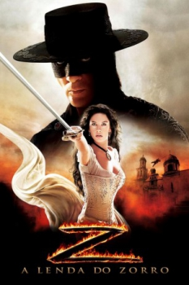

A Lenda do Zorro (2005)


A aventura começa com Z.

Avaliação (TMDb):


6.1/10 (2.2K votos)
Avaliação (Usuário):
Outro Título:The Legend of Zorro (Título Original)
País:United States, 129 minutos
Idiomas falados:Inglês, Espanhol, Português
Gênero(s):Ação, Aventura, Western
Diretor(s):Martin Campbell
Codec:MPEG-2 (DVD)
Número: 289
Sinopse:
Em 1850, o povo da Califórnia estavam votando para decidir se quer ou não se juntar aos Estados Unidos. A Lenda do Zorro é uma sequência de A Máscara do Zorro,
Elenco:
Antonio Banderas, Catherine Zeta-Jones, Adrián Alonso, Julio Oscar Mechoso, Nick Chinlund, Alexa Benedetti, Rufus Sewell, Raúl Méndez, Brandon Wood, Michael Emerson
Tipo de mídia: DVD5,
Legendas: Inglês, Espanhol, Português
Alugado: Não
Tela: 2.35:1